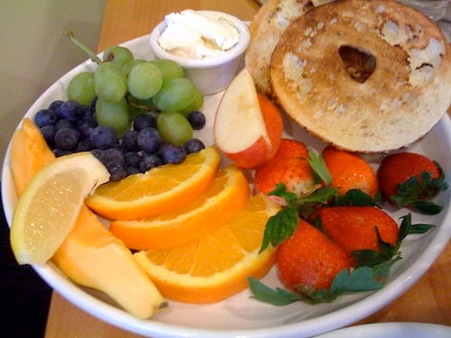
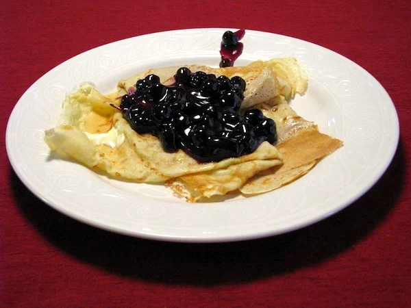
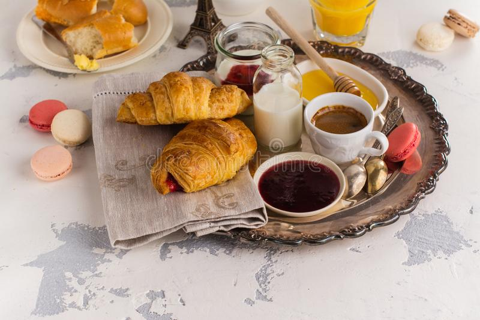
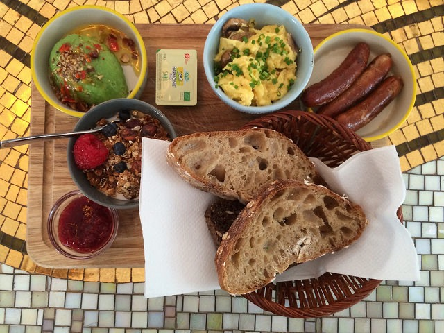
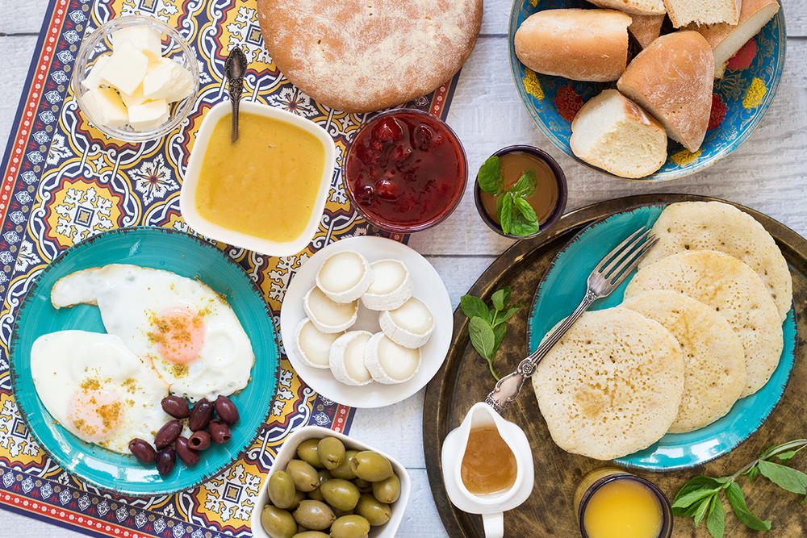
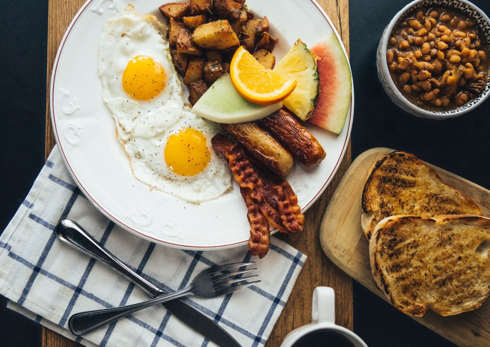
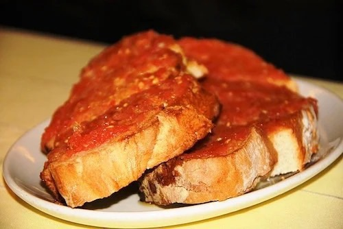
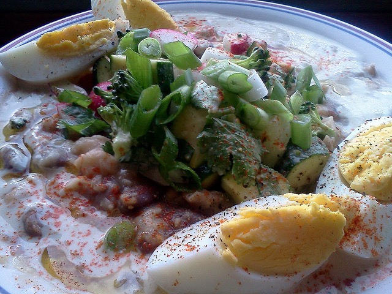
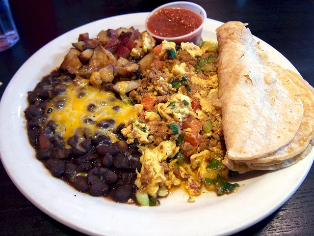

Hawaii
Colazione con ananas, cocco, mango e papaya: un trionfo cromatico dal sapore dolcissimo. Immancabile un bel caffè americano con panna e delle piccole ciambelline zuccherate.Svezia
Colazione con il pancake, solitamente alla marmellata, che come tutti sanno induce assuefazione. E sul genere di una crepe, fritta da ambo le parti, e si mangia anche con la panna.


Francia
Colazione con croissant con gocce di cioccolato o ripieno di marmellata o crema, integrale al miele o alla crema bianca,panna o ricotta dolce. Immancabile un cafè au lait accanto.Danimarca
Colazione con pane di segale, paté e dressing salati, formaggi piccanti e prosciutti affumicati con un tono dolce dato dalle confetture di frutta, miele e il tipico pane di segale al cioccolato.


Marocco
Colazione con panini caldi spalmati con mostarda, alle schiacciate con marmellate dolci, focacce e le Baghir che sono crepes di farina di semola guarnite con salse dolci o formaggio.Cadana
Colazione con caffè, uova strapazzate, bacon e salsicce con patate fritte , pane tostato, bagel, pancake o waffle con sciroppo d’acero oppure French toast o porridge.


Spagna
Colazione con formaggio, prosciutto o salsiccia, pane alla Catalana o pane col pomodoro. Basta strofinare aglio fresco e pomodoro maturo sul pane, aggiungere olio extra vergine e sale.Egito
Colazione con focaccine dolci alla cipolla, zuppe di legumi, aglio e limone con un filo d’olio d’oliva e salsa tahini al sesamo per intingervi alcune verdure bollite e un uovo sodo.


Messico
Colazione con chilaquiles piccanti ricoperte da pomodoro, formaggio fuso e coriandolo e succulente punte di vitello e Nachos da immergere in salse piccanti. Con una tazza di tè.A colazione mangia quanto vuoi
MariaConcetta Lo Grande